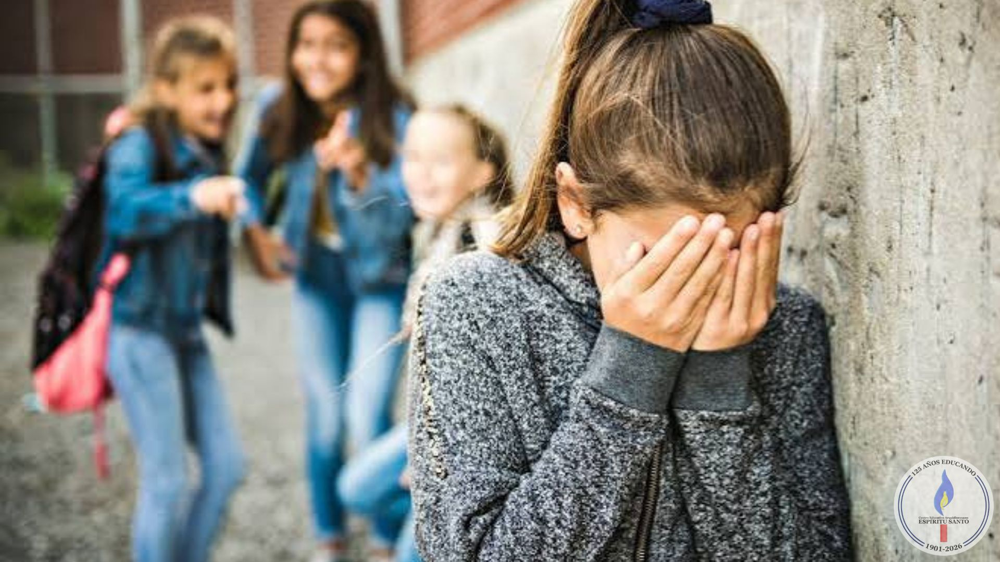

Taller "En tus zapatos" sobre acoso escolar y vinculos saludables
Por: Erik Leandro Ozan Reyes

Participaron los alumnos de 3°A.
La profesora Marina Samaniego y Santiago Jaureguiberry nos acompañaron en este taller. En el taller empezamos con una presentación de cada uno con los nombres sumado con una observación del curso que será debatida por el curso luego de los planteos.
Además se nos presentó un juego un juego de estar en una barco alejado de la tierra sobre el mar y con 3 personas ahogándose en el agua, la condición era que salvemos a uno y dejar morir a los 2 restantes. El primero era una persona común de 45 años con 2 perros y muchas veces elegido como Padrino, El segundo era un discapacitado con Muchísimo dinero y el tercero era un anciano de 91 años que fue preso mucho tiempo.
La gran mayoría de los/as Estudiantes votaron salvar al primero porque se pensó que alguien bueno es normal que tengo muchos Ahijados o sino porque los 2 perros les daba pena que se quedaran sin nadie.
Uno que otro salvo el segundo por empatía a la discapacidad u otras alternativas, pero al anciano se pensaba que ya era suficiente vida para irse del mundo o porque sus antecedentes penales hablan de sus posibles malas actitudes.
Cuando terminó el discurso de cada uno nos dijeron que eran personas que realmente existieron, y nos empezaron a decir quién era cada uno. El Señor que aparentemente era el más fiable terminó siendo Adolf Hitler, El discapacitado con muchísimo dinero era el presidente de Estados Unidos 4 veces elegido: Franklin D. Roosevelt y el anciano era una persona que injustamente fue a prisión por mucho tiempo. Este giro Impacta a todos/as y nos damos cuenta que a veces criticamos mirando los malo sin pensar otra posible alternativa.
Para cerrar el evento jugamos a poner en cartas lo que veamos, lo que sentimos, lo que no nos guste etc, en el aula. Luego esas tarjetas anónimas fueron entregadas y leídas en voz alta para debatir cada carta, surgieron varias ideas y fueron charlamos entre todos/as y se logró reflexionar algunas cosas.
En fin, cuando acabó salimos de biblioteca con otros posibles pensamientos pero más tranquilos de soltar un poco lo que capaz estaba bueno haber charlado, eso fue lo que vivimos y fue muy bueno tener ese taller.